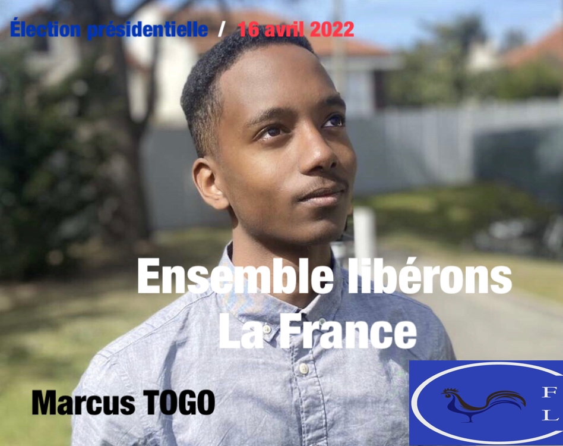

Nos engagements

Lorsque nous seront élus nous metterons en place diverses mesure afin de rétablir un cadre de vie correct pour tout nos citoyens francais
Dans un premiers temps nous établiront une augmentation des salaires de 10% jusqu'à 2,2 SMIC afin de permettre aux familles
les plus modeste de vivre décsament par la suite nous établieront la création d'un revenu « jeune actif » de 670 euros/mois
ainsi qu'un prêt à taux zéro pour les jeunes hors des grandes villes pour permettre au jeune d entreprendre mais surtout
d avoir accès aux éducations qu' ILS SOUHAITENT par la suite nous voulons ...
(pour plus d informations cliquer au dessous)
Télécharger notre Programme